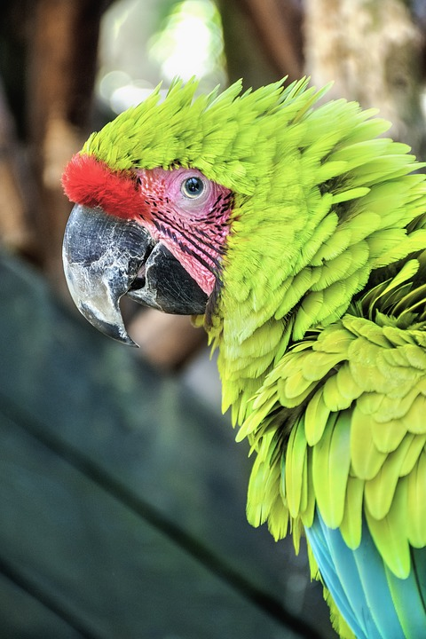

Sobre Nosotros
Conformada por voluntarios de la comunidad de Sugar Labs en sudamérica, Somos Azúcar inicia labores en 2009 como un equipo de Investigación y Desarrollo especializado en la apropiación de tecnologías libres para la información y la comunicación, aplicadas al aprendizaje.
Las tecnologías libres son aquellas que, por ejemplo, permitirían la traducción del software a tu propia lengua, cualquier que esta sea.
Hoy en dia, Somos Azúcar es una marca que representa el trabajo de un equipo de individuos (consultores, investigadores, productores, desarrolladores, etc.) que apoyan y promueven la evolución y el uso apropiado de los sistemas de información instalados en las máquinas desplegadas en las intervenciones tecnológicas de educación pública en América Latina.

Siempre ejecutando proyectos alineados con nuestra misión, Somos Azúcar interactúa con el sistema empleando un modelo mixto de representación a través de empresas y fundaciones, atendiendo a la comunidad educativa, encontrado aliados entre otros, por ejemplo, al Banco Interamericano de Desarrollo (BID), a la Dirección General de Tecnologías Educativas (DIGETE) del Ministerio de Educación de Perú, ANSPE / Alcaldía de Chía (Colombia), OLPC, Plan de Inglés (MEd. Perú), etc.
Somos Azúcar se articula en equipos, los cuales funcionan por invitación, de acuerdo a cada proyecto. Si tienes un proyecto para nosotros, o deseas participar en nuestro equipo, envíanos un correo.
Además de nuestro énfasis en la ejecución de proyectos y el desarrollo y mantenimiento de productos, cada uno de los miembros de SomosAZUCAR tiene un compromiso personal con la causa de la "Libertad en el Software como única opción para una cultura sostenible en el sector educativo y la sociedad en general".
Consideramos que el despliegue de cualquier tecnología debe servir a un propósito, por ejemplo: Mejorar la calidad de vida de las personas, garantizar su libertad, promover su soberanía alimentaria, llevar un monitoreo del medio ambiente, la gestión automatizada de los recursos, etc.
La tecnología no es buena o mala por si misma. Debe servir para liberar a las personas y jamás para oprimirlas. Ello depende de cada uno de nosotros.